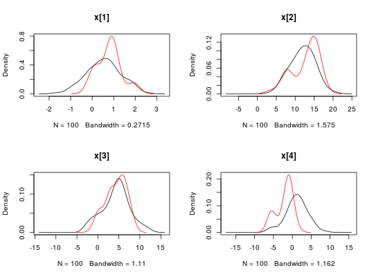
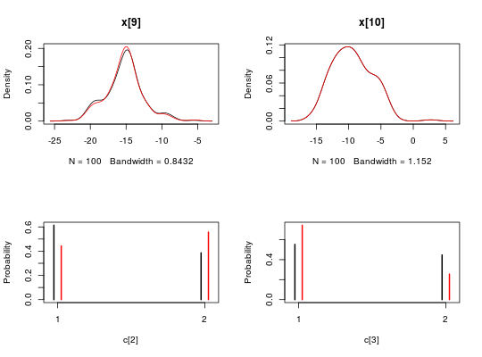
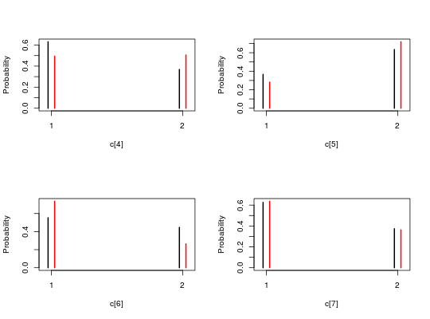
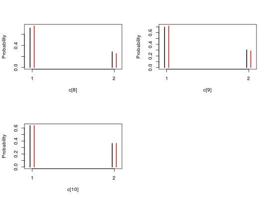

Bayesian inference with interacting particle systems
rbiips is an interface with the https://biips.github.io C++ libraries for analysing Bayesian graphical models using advanced particle methods.
Details
Biips is a general software for Bayesian inference with interacting particle systems, a.k.a. sequential Monte Carlo (SMC) methods. It aims at popularizing the use of these methods to non-statistician researchers and students, thanks to its automated “black box” inference engine. It borrows from the http://www.mrc-bsu.cam.ac.uk/software/bugs//http://mcmc-jags.sourceforge.net/ software, widely used in Bayesian statistics, the statistical modeling with graphical models and the language associated with their descriptions.
See the https://biips.github.io for more information.
The typical workflow is the following:
- Define the model in BUGS language (see the http://sourceforge.net/projects/mcmc-jags/files/Manuals/4.x/jags_user_manual.pdf/download for help) and the data.
- Add custom functions or distributions with
biips_add_functionandbiips_add_distribution. - Compile the model with
biips_model - Run inference algorithms:
- Analyse sensitivity to parameters with
biips_smc_sensitivity. - Run SMC filtering and smoothing algorithms with
biips_smc_samples. - Run particle MCMC algorithms with
biips_pimh_samplesorbiips_pmmh_samples.
- Analyse sensitivity to parameters with
- Diagnose and analyze the output obtained as
smcarrayandmcmcarrayobjects withbiips_diagnosis,biips_summary,biips_density,biips_histandbiips_table
References
Adrien Todeschini, François Caron, Marc Fuentes, Pierrick Legrand, Pierre Del Moral (2014). Biips: Software for Bayesian Inference with Interacting Particle Systems. arXiv preprint arXiv:1412.3779. URL http://arxiv.org/abs/1412.3779
See also
biips_add_function, biips_add_distribution,
biips_model, biips_smc_sensitivity, biips_smc_samples,
biips_pimh_samples, biips_pmmh_samples, smcarray,
mcmcarray, biips_diagnosis, biips_summary,
biips_density, biips_hist, biips_table,
https://biips.github.io,
http://sourceforge.net/projects/mcmc-jags/files/Manuals/4.x/jags_user_manual.pdf/download
Examples
#' # Add custom functions and distributions to BUGS language #' Add custom function `f` f_dim <- function(x_dim, t_dim) { # Check dimensions of the input and return dimension of the output of function f stopifnot(prod(x_dim) == 1, prod(t_dim) == 1) x_dim } f_eval <- function(x, t) { # Evaluate function f 0.5 * x + 25 * x/(1 + x^2) + 8 * cos(1.2 * t) } biips_add_function('f', 2, f_dim, f_eval)#> * Added function f#' Add custom sampling distribution `dMN` dMN_dim <- function(mu_dim, Sig_dim) { # Check dimensions of the input and return dimension of the output of # distribution dMN stopifnot(prod(mu_dim) == mu_dim[1], length(Sig_dim) == 2, mu_dim[1] == Sig_dim) mu_dim } dMN_sample <- function(mu, Sig) { # Draw a sample of distribution dMN mu + t(chol(Sig)) %*% rnorm(length(mu)) } biips_add_distribution('dMN', 2, dMN_dim, dMN_sample)#> * Added distribution dMN#' # Compile model modelfile <- system.file('extdata', 'hmm_f.bug', package = 'rbiips') stopifnot(nchar(modelfile) > 0) cat(readLines(modelfile), sep = '\n')#> var c_true[tmax], x_true[tmax], c[tmax], x[tmax], y[tmax] #> #> data #> { #> x_true[1] ~ dnorm(0, 1/5) #> y[1] ~ dnorm(x_true[1], exp(logtau_true)) #> for (t in 2:tmax) #> { #> c_true[t] ~ dcat(p) #> x_true[t] ~ dnorm(f(x_true[t-1], t-1), ifelse(c_true[t]==1, 1/10, 1/100)) #> y[t] ~ dnorm(x_true[t]/4, exp(logtau_true)) #> } #> } #> #> model #> { #> logtau ~ dunif(-3, 3) #> x[1] ~ dnorm(0, 1/5) #> y[1] ~ dnorm(x[1], exp(logtau)) #> for (t in 2:tmax) #> { #> c[t] ~ dcat(p) #> x[t] ~ dnorm(f(x[t-1], t-1), ifelse(c[t]==1, 1/10, 1/100)) #> y[t] ~ dnorm(x[t]/4, exp(logtau)) #> } #> }data <- list(tmax = 10, p = c(.5, .5), logtau_true = log(1), logtau = log(1)) model <- biips_model(modelfile, data, sample_data = TRUE)#> * Parsing model in: /home/adrien-alea/Dropbox/workspace/rbiips/inst/extdata/hmm_f.bug #> * Compiling data graph #> Declaring variables #> Resolving undeclared variables #> Allocating nodes #> Graph size: 94 #> Sampling data #> Reading data back into data table #> * Compiling model graph #> Declaring variables #> Resolving undeclared variables #> Allocating nodes #> Graph size: 105#' # SMC algorithm n_part <- 100 out_smc <- biips_smc_samples(model, c('x', 'c[2:10]'), n_part, type = 'fs', rs_thres = 0.5, rs_type = 'stratified')#> * Assigning node samplers #> * Running SMC forward sampler with 100 particles #> |--------------------------------------------------| 100% #> |**************************************************| 10 iterations in 0.07 sbiips_diagnosis(out_smc)#> * Diagnosis of variable: c[2:10] #> Filtering: POOR #> The minimum effective sample size is too low: 19.44938 #> Estimates may be poor for some variables. #> You should increase the number of particles #> . Smoothing: POOR #> The minimum effective sample size is too low: 15.18234 #> Estimates may be poor for some variables. #> You should increase the number of particles #> .* Diagnosis of variable: x[1:10] #> Filtering: POOR #> The minimum effective sample size is too low: 19.44938 #> Estimates may be poor for some variables. #> You should increase the number of particles #> . Smoothing: POOR #> The minimum effective sample size is too low: 15.18234 #> Estimates may be poor for some variables. #> You should increase the number of particles #> .biips_summary(out_smc)#> c[2:10] filtering smcarray: #> $mode #> [1] 1 1 1 2 1 1 1 1 1 #> #> Marginalizing over: particle(100) #> #> c[2:10] smoothing smcarray: #> $mode #> [1] 2 1 2 2 1 1 1 1 1 #> #> Marginalizing over: particle(100) #> #> #> x filtering smcarray: #> $mean #> [1] 0.5359106 11.9909329 4.2994929 1.1719284 -14.8599590 0.2448851 #> [7] -6.8653121 -9.4484743 -15.2190362 -9.4142487 #> #> Marginalizing over: particle(100) #> #> x smoothing smcarray: #> $mean #> [1] 0.8024302 12.6776918 4.2895803 -2.0890361 -14.8602361 -2.1091468 #> [7] -7.4207532 -9.3751760 -15.2109352 -9.4142487 #> #> Marginalizing over: particle(100) #> #>